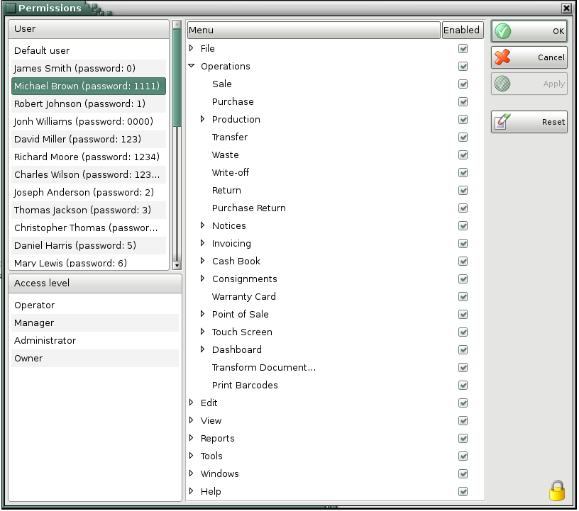

Permissions
Use the Permissions window to limit the access of any user to certain features and menus of the application. Only owners or administrators can apply any restrictions.
In the Users section select the user to which restrictions will be applied.

Each menu has two states:
- Enable � when the check box is marked, the menu is visible and accessible
- Disable � when the check box is not marked, the menu is invisible and inaccessible
You can apply restrictions for buttons in the lists, as well. This is similar to applying restrictions for the menus, where each list contains subcategories with the corresponding buttons.
Click on the OK button to save changes and close the window. Click on the Cancel button to close the window without saving any changes. Click on the Apply button to save changes without closing the window.
�2006-2015 Microinvest, All rights reserved